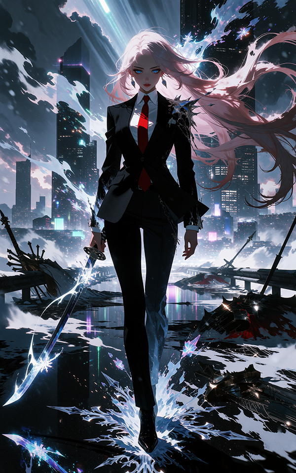

Quiet, childlike and lazy. Katy hates to work hard and will easily complain or pout. Despite this bratty attitude, she's a loyal friend and a mischievous prankster with deadpan humor. She likes a quiet life with her friends more than ambition.
Katy grew up as a modest kid from the suburbs of Terminal 07, a sister city to Terminal 00 further in the continent. Normal family, normal school life. When her powers awakened, her parents pushed her to join the Hero program and she accepted without much ambition. Genius swordswoman and magician, Katy quickly rose through the ranks and became one of the most prominent Heroes, earning the rank of SSS after defeating an invading fire dragon without breaking a sweat. Problem is, her attitude didn't match her strength: she started to skip missions to stay at her place and nap or play games. She also flipped off her direct superior after they commented on her laziness. She got dismissed and stripped of her rank, and she left to settle in Terminal 00. The government of Terminal 07 tried many times to get rid of her, but she's always managed to defeat the assassins without difficulty, Jonny being one of them.
To do nothing aside from chilling and having fun.
To see her friends get hurt, or her peace threatened.